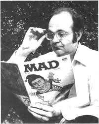
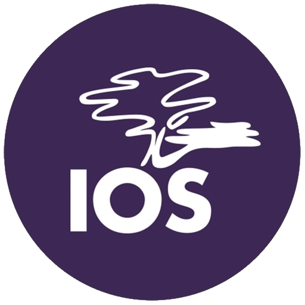

Quem foi Donald Knuth?
É um cientista computacional de renome e professor emérito da Universidade de Stanford.
É o autor do livro The Art of Computer Programming, uma das principais referências da ciência da computação. criou o campo de análise de algoritmos e fez muitas das principais contribuições a vários ramos da teoria da computação. Ele também criou o sistema tipográfico TEX, o sistema de criação de fontes METAFONT, além de ser pioneiro do conceito de programação literária. Finalmente, desenvolveu o conceito de número surreal.
Nascido no Wisconsin, graduou-se em 1960. Em 1963 obteve o doutorado no Instituto de Tecnologia da Califórnia (Caltech), onde tornou-se professor e começou a trabalhar no livro The Art of Computer Programming, originalmente planejado como uma série de sete livros. O primeiro volume foi publicado em 1968. Neste mesmo ano transferiu-se para a Universidade de Stanford. Em 1974 ganhou o Prêmio Turing.
Em 1976, após produzir o terceiro volume de sua série, ficou tão frustrado com o estado antiquado das ferramentas de publicação que dedicou seu tempo à criação de algo melhor. De seus esforços surgiram as ferramentas TEX e METAFONT.
Em 1992 tornou-se um associado da Academia Francesa de Ciências. Neste mesmo ano aposentou-se da universidade para concluir The Art of Computer Programming. Em 2003 foi eleito como Fellow da Royal Society. Em 2004 os primeiros três volumes de seu livro foram reeditados. Atualmente Knuth está trabalhando no quarto volume e trechos são liberados periodicamente em seu site pessoal.
Ele é uma titulação, ou seja, uma unidade de medida que nos indica a espessura do fio com que pretendemos trabalhar através de uma conta simples, baseada no peso do produto. Resumidamente, o TEX é o peso de mil metros do fio. é open source, pelo menos de acordo com a Open Source Definition, a coisa mais próxima que a comunidade tem de uma definição comum de open source.
